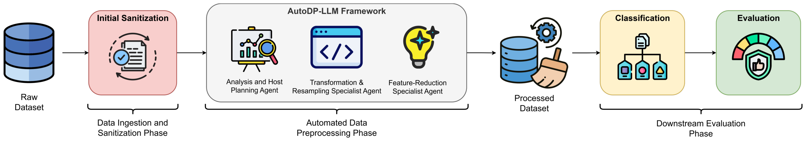
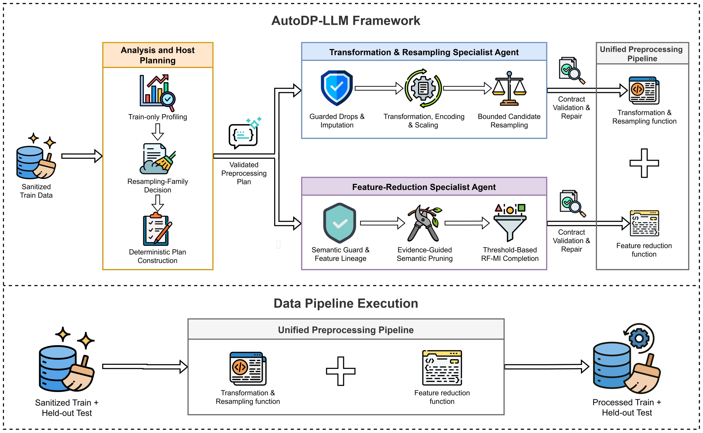

thienlv@neu.edu.vn* Tác giả liên hệ: thienlv@neu.edu.vnThe increasing complexity and scale of modern cyber-attacks demand intelligent and computationally efficient Intrusion Detection Systems (IDS). However, designing effective data pre-processing pipelines traditionally involves substantial trial-and-error effort and repeated evaluation of alternative configurations, which creates a significant computational burden for large, high-dimensional network traffic data. We propose AutoDP-LLM, an automated pre-processing framework that leverages Large Language Models to autonomously generate and validate executable data pre-processing pipelines. It combines deterministic host-side planning with LLM-based specialist agents to formulate data-processing strategies, synthesize executable code, and adaptively determine retained feature sets using semantic reasoning and training-derived statistical evidence, without a predefined feature budget. On multiclass intrusion detection with UNSW-NB15 and NSL-KDD and multiple downstream classifiers, AutoDP-LLM achieves competitive detection performance against conventional feature-selection methods while automating the generation of compact, executable pipelines. Component-level ablations show the complementary contributions of the semantic and statistical feature-reduction components. Because candidate pipelines are generated, validated, executed and assessed independently, the workflow is amenable to parallel and HPC execution.
Các cuộc tấn công mạng ngày càng phức tạp và quy mô lớn đòi hỏi hệ thống phát hiện xâm nhập (IDS) thông minh và hiệu quả về tính toán. Tuy nhiên, thiết kế pipeline tiền xử lý dữ liệu cho IDS thường phải thử–sai nhiều lần và đánh giá lặp lại nhiều cấu hình, gây gánh nặng tính toán lớn với dữ liệu lưu lượng mạng nhiều chiều. Nhóm đề xuất AutoDP-LLM, một khung tiền xử lý tự động dùng mô hình ngôn ngữ lớn để tự sinh và kiểm chứng các pipeline tiền xử lý chạy được. Khung kết hợp lập kế hoạch tất định phía host với các agent LLM chuyên biệt để xây dựng chiến lược xử lý, sinh mã thực thi, và tự xác định tập đặc trưng cần giữ dựa trên suy luận ngữ nghĩa và bằng chứng thống kê lấy từ tập huấn luyện, không cần đặt trước số đặc trưng. Trên bài toán phát hiện xâm nhập đa lớp với UNSW-NB15 và NSL-KDD cùng nhiều bộ phân loại, AutoDP-LLM đạt hiệu năng cạnh tranh so với các phương pháp chọn đặc trưng truyền thống, đồng thời tự động tạo ra pipeline gọn và chạy được. Các thí nghiệm cắt bỏ cho thấy thành phần ngữ nghĩa và thành phần thống kê bổ trợ cho nhau. Vì mỗi pipeline ứng viên được sinh, kiểm chứng, chạy và đánh giá độc lập, quy trình này dễ song song hóa trên hạ tầng HPC.
Cleaning, encoding, resampling and feature selection for IDS are designed by hand and re-run many times. A pipeline tuned for one dataset rarely transfers to another with different traffic, schemas or attack mix.
Làm sạch, mã hóa, cân bằng lớp và chọn đặc trưng cho IDS thường được thiết kế thủ công và chạy lại nhiều lần. Pipeline tối ưu cho một bộ dữ liệu hiếm khi dùng được cho bộ khác có lưu lượng, lược đồ hay tỉ lệ tấn công khác.
The host profiles the data and fixes every policy; agents only write code against a strict contract. Static checks, sandboxed runtime tests and bounded repair loops enforce train-only fitting, no test leakage and deterministic replay.
Host tự phân tích dữ liệu và cố định mọi chính sách; agent chỉ viết mã theo một hợp đồng chặt chẽ. Kiểm tra tĩnh, chạy thử trong môi trường cô lập và vòng sửa lỗi có giới hạn đảm bảo chỉ học từ tập train, không rò rỉ dữ liệu test và chạy lại cho cùng kết quả.
The LLM nominates features with a clear IDS meaning; Random Forest and mutual-information evidence prune and complete the set. The final size K = s + q comes out of the thresholds and is never clamped.
LLM đề cử các đặc trưng có ý nghĩa rõ ràng với IDS; bằng chứng từ Random Forest và mutual information dùng để lọc và bổ sung. Kích thước cuối K = s + q do các ngưỡng quyết định và không bị ép về một con số.


The host profiles train data only (statistics, correlations, Cramér's V, ANOVA). The analysis agent returns one JSON field: a resampling family (None, SMOTE, ADASYN, Tomek links, …). The host then builds the full plan with none / mild / moderate candidates.Host chỉ phân tích tập train (thống kê, tương quan, Cramér's V, ANOVA). Agent phân tích trả về đúng một trường JSON: họ phương pháp cân bằng lớp (None, SMOTE, ADASYN, Tomek links, …). Host sau đó dựng kế hoạch đầy đủ với ba ứng viên none / mild / moderate.
A code agent writes the function for guarded drops and imputation, log(1+x) on heavily skewed features, binary / one-hot / cross-fitted target encoding, z-score scaling, and bounded resampling that keeps every original class.Agent viết mã sinh hàm xử lý: chỉ bỏ các cột đã được duyệt, điền giá trị thiếu, log(1+x) cho đặc trưng lệch mạnh, mã hóa nhị phân / one-hot / target encoding cross-fit, chuẩn hóa z-score, và cân bằng lớp có giới hạn, giữ đủ mọi lớp gốc.
Up to 20 semantic candidates in 8 IDS roles and 3 tiers; a semantic RF prunes them to ≤ 15 seeds. Remaining columns enter if Sj = 0.6·PRF + 0.4·PMI ≥ 0.55 and |ρ| < 0.90 with kept columns.Tối đa 20 đặc trưng ngữ nghĩa thuộc 8 vai trò IDS và 3 mức ưu tiên; một RF ngữ nghĩa lọc còn ≤ 15 hạt giống. Các cột còn lại được thêm nếu Sj = 0.6·PRF + 0.4·PMI ≥ 0.55 và |ρ| < 0.90 với các cột đã giữ.
Generated code passes AST, interface and sandboxed runtime checks; failures trigger up to two fresh repair calls. The feature set is locked on an inner train split, then LightGBM picks the resampling candidate by validation weighted F1.Mã sinh ra phải qua kiểm tra AST, giao diện hàm và chạy thử cô lập; nếu lỗi sẽ gọi lại LLM tối đa hai lần để sửa. Tập đặc trưng được khóa trên một phần tập train, sau đó LightGBM chọn ứng viên cân bằng lớp theo weighted F1 trên tập validation.
Multiclass intrusion detection on UNSW-NB15 (10 classes, 175,341 train / 82,332 test) and NSL-KDD (5 classes, 125,973 train / 22,544 test). Each configuration is run 30 times, each run calling the LLM anew (GPT-5.4) and producing a separately generated pipeline; results are mean ± SD over the 30 pipelines.Phát hiện xâm nhập đa lớp trên UNSW-NB15 (10 lớp, 175.341 mẫu train / 82.332 mẫu test) và NSL-KDD (5 lớp, 125.973 train / 22.544 test). Mỗi cấu hình chạy 30 lần, mỗi lần gọi lại LLM (GPT-5.4) và sinh ra một pipeline riêng; kết quả là trung bình ± độ lệch chuẩn trên 30 pipeline.
| Classifier | UNSW-NB15 | NSL-KDD | ||||
|---|---|---|---|---|---|---|
| Accuracy | Weighted F1 | Time (s) | Accuracy | Weighted F1 | Time (s) | |
| Random Forest | 76.59 ± 0.28 | 78.41 ± 0.21 | 117.18 | 76.46 ± 0.85 | 72.43 ± 0.93 | 93.94 |
| KNN | 73.33 ± 0.17 | 76.08 ± 0.18 | 108.98 | 77.22 ± 0.52 | 74.75 ± 0.50 | 90.97 |
| MLP | 77.51 ± 0.64 | 77.76 ± 0.49 | 190.61 | 78.80 ± 0.92 | 76.38 ± 0.99 | 112.65 |
| XGBoost | 77.20 ± 0.23 | 78.41 ± 0.22 | 106.38 | 77.79 ± 0.80 | 74.37 ± 0.72 | 91.60 |
| LightGBM | 77.35 ± 0.30 | 78.40 ± 0.31 | 117.91 | 75.34 ± 0.78 | 72.07 ± 0.66 | 96.04 |
| CatBoost | 76.84 ± 0.12 | 77.92 ± 0.14 | 150.56 | 79.24 ± 0.26 | 76.13 ± 0.33 | 99.94 |
Time is total execution time (mean). Generated pipelines keep 26–28 features on UNSW-NB15 and 24–26 on NSL-KDD. XGBoost (UNSW-NB15) and MLP (NSL-KDD) are used as representative classifiers below.Thời gian là tổng thời gian thực thi (trung bình). Các pipeline giữ 26–28 đặc trưng trên UNSW-NB15 và 24–26 trên NSL-KDD. XGBoost (UNSW-NB15) và MLP (NSL-KDD) được dùng làm bộ phân loại đại diện cho các bảng bên dưới.
| Method | UNSW-NB15 (XGBoost) | NSL-KDD (MLP) | ||
|---|---|---|---|---|
| W-F1 | Time (s) | W-F1 | Time (s) | |
| LiteShield-MI-FS | 78.17 | 114.07 | 67.34 | 96.47 |
| XGBoost-FS | 77.92 | 10.74 | 71.53 | 78.28 |
| IGRF-RFE | 78.13 | 857.20 | – | – |
| DSSTE | – | – | 73.59 | 77.56 |
| AutoDP-LLM (Ours)AutoDP-LLM (Của nhóm) | 78.41 | 106.38 | 76.38 | 112.65 |
Baselines are re-implemented under the same classifier. AutoDP-LLM has the highest weighted F1 on both datasets (+0.24 pp and +2.79 pp), but no consistent runtime advantage.Các baseline được cài đặt lại với cùng bộ phân loại. AutoDP-LLM có weighted F1 cao nhất trên cả hai bộ dữ liệu (+0.24 và +2.79 điểm), nhưng không phải lúc nào cũng nhanh hơn.
| Variant | UNSW | NSL |
|---|---|---|
| w/o RF-MI completionBỏ bổ sung RF-MI | 77.28 | 75.03 |
| w/o semantic pruningBỏ lọc ngữ nghĩa | 77.90 | 76.26 |
| w/o semantic componentsBỏ toàn bộ phần ngữ nghĩa | 78.33 | 74.53 |
| Full methodĐầy đủ | 78.41 | 76.38 |
RF-MI completion matters on both datasets; semantic guidance matters most on NSL-KDD (−1.85 pp without it).Bước bổ sung RF-MI quan trọng trên cả hai bộ dữ liệu; phần ngữ nghĩa quan trọng nhất trên NSL-KDD (giảm 1.85 điểm nếu bỏ).
All three backbones generated executable pipelines for both datasets. They differ mostly in one-time design-time cost, not in the resulting pipelines.Cả ba LLM nền đều sinh được pipeline chạy được cho hai bộ dữ liệu. Khác biệt chủ yếu nằm ở chi phí sinh pipeline (một lần), không phải ở pipeline thu được.
| LLM | UNSW-NB15 (XGBoost) | NSL-KDD (MLP) | ||||||
|---|---|---|---|---|---|---|---|---|
| W-F1 | TokensToken | Latency (s)Độ trễ (s) | CostChi phí | W-F1 | TokensToken | Latency (s)Độ trễ (s) | CostChi phí | |
| Claude-Sonnet-4.6 | 77.44 | 18,199 | 283.26 | $0.318 | 74.82 | 13,585 | 306.32 | $0.249 |
| DeepSeek-V4-Pro | 78.34 | 79,152 | 858.33 | $0.147 | 75.19 | 86,987 | 1,525.33 | $0.160 |
| GPT-5.4 | 78.41 | 10,418 | 60.23 | $0.194 | 76.38 | 10,800 | 64.55 | $0.200 |
GPT-5.4 gives the best balance of accuracy, latency (≈4.7× faster than Claude-Sonnet-4.6) and cost; DeepSeek-V4-Pro is cheapest but 14–24× slower. The best single UNSW-NB15 result is DeepSeek-V4-Pro with Random Forest (78.56%).GPT-5.4 cân bằng tốt nhất giữa độ chính xác, độ trễ (nhanh hơn Claude-Sonnet-4.6 khoảng 4.7 lần) và chi phí; DeepSeek-V4-Pro rẻ nhất nhưng chậm hơn 14–24 lần. Kết quả đơn lẻ tốt nhất trên UNSW-NB15 là DeepSeek-V4-Pro với Random Forest (78.56%).
Candidate pipelines are generated, validated, executed and evaluated independently, and downstream classifiers can be trained concurrently. This task-level parallelism maps naturally onto multicore, distributed and HPC infrastructure.
Các pipeline ứng viên được sinh, kiểm chứng, chạy và đánh giá độc lập, và các bộ phân loại có thể huấn luyện đồng thời. Tính song song ở mức tác vụ này phù hợp tự nhiên với hạ tầng đa lõi, phân tán và HPC.
Raw packet captures and heterogeneous system logs, distributed and HPC implementations, smaller open-weight LLMs deployed locally for privacy-sensitive settings, and adaptive pre-processing for continuous data streams.
Mở rộng sang gói tin thô và nhật ký hệ thống không đồng nhất, triển khai phân tán và HPC, dùng LLM mã nguồn mở nhỏ chạy cục bộ cho môi trường nhạy cảm về dữ liệu, và tiền xử lý thích ứng cho luồng dữ liệu liên tục.
If you find this work useful, please cite:Nếu nghiên cứu này hữu ích cho công việc của bạn, xin vui lòng trích dẫn:
@article{nguyen2026autodpllm,
title = {{AutoDP-LLM}: Automating Data Pre-processing for Intrusion Detection Systems using Large Language Models},
author = {Nguyen, Bao-Phong and Pham, Gia-Khanh and Do, Thai-Duong and Trang, Mai Xuan and Le, Minh-Tuan and Tran, Xuan-Nam and Vu, Huan and Nguyen, Tien-Cuong and Ngo, Vu-Duc and Luong, Thien Van},
journal = {The Journal of Supercomputing},
year = {2026}
}